Forever Frogs: Jumping into Attributes & Fields
LIS 5043: Organization of Information
Introduction
Our Collection: Forever Frogs
- Forever Frogs is a retail store that sells artistic representations of frogs, just frogs, everything froggy. It is located in an upscale village square of a progressive community in the Midwest. The collection contains several formats, for example:
- Garden sculpture
- Children’s toys
- Fiction and nonfiction books
- Realia, images, paintings, etc.
- Music
- Robots and other electronics
- Clothing
- Because the owners are so terribly busy traveling the world to find all things froggy, they do not have the time to design an organization system for the collection. Your task is to model on paper the ideal organization system for Forever Frogs.
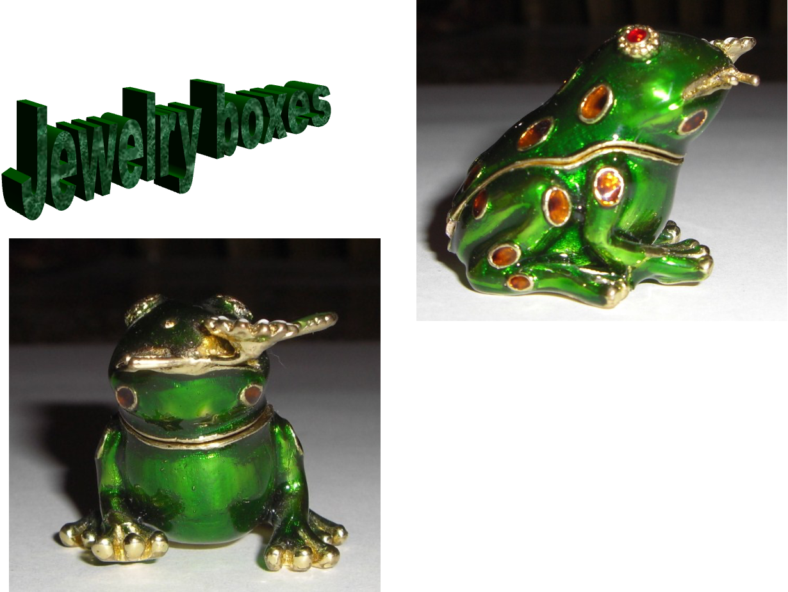
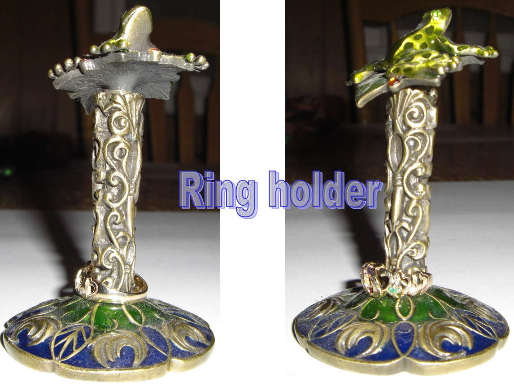
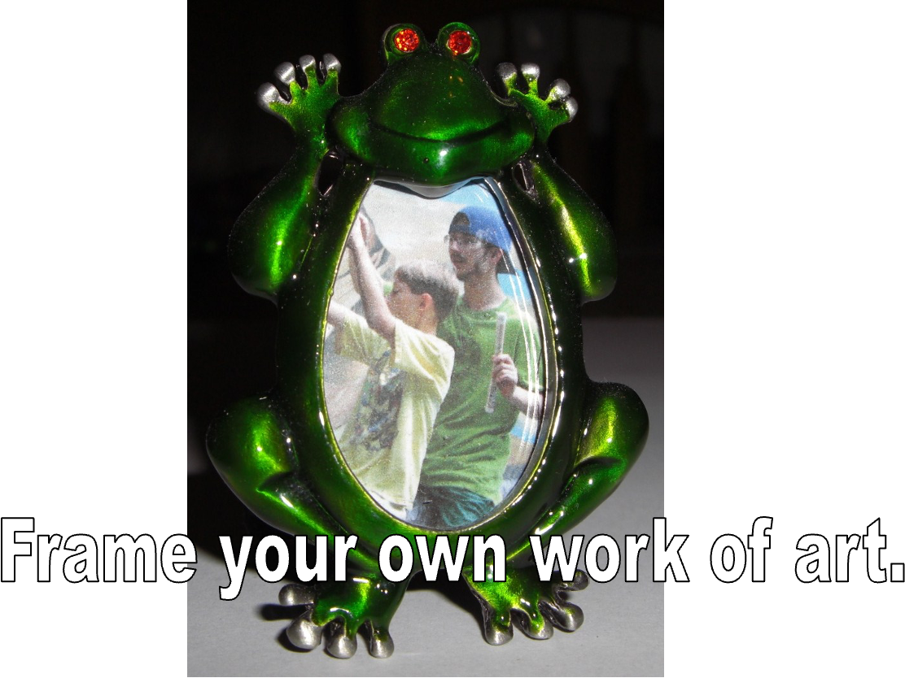
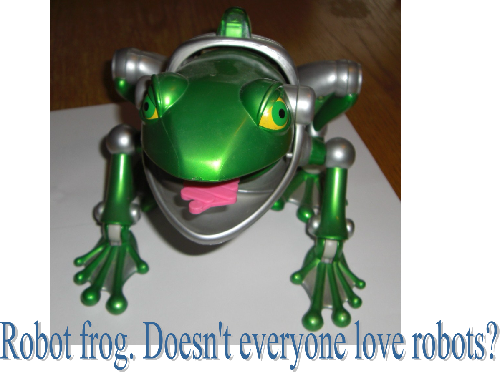
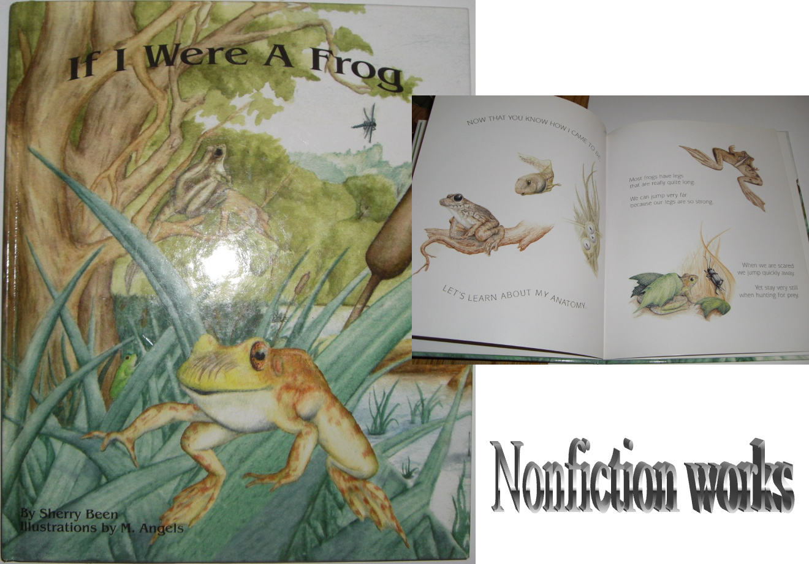
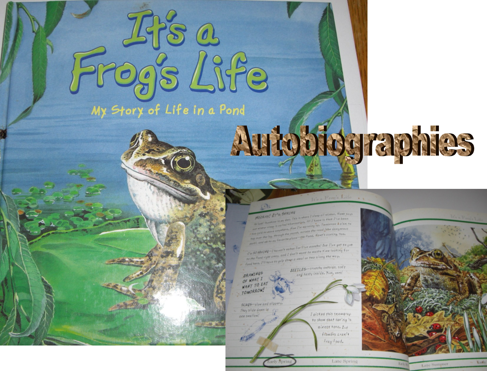
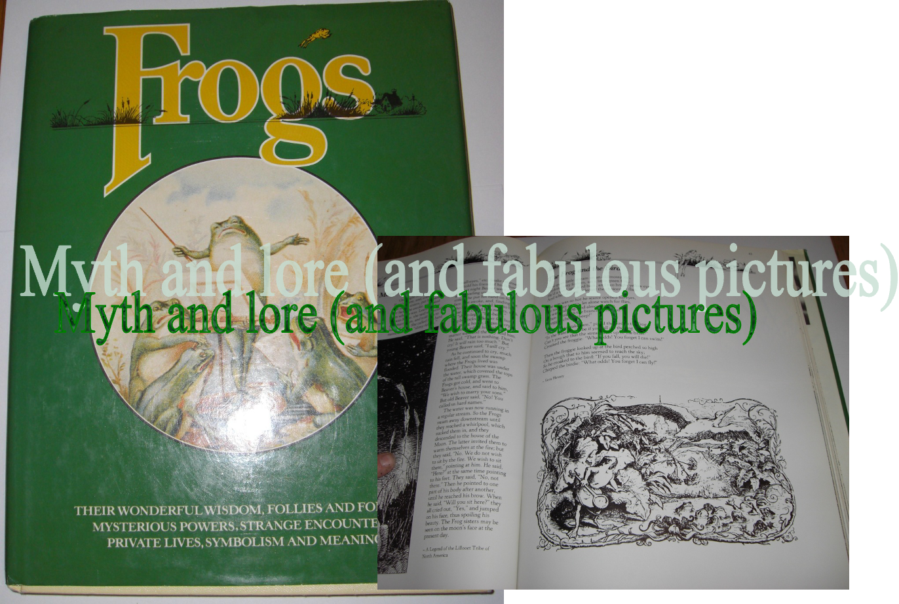
Entity First Level
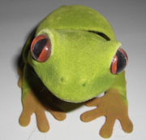- Each object in the collection will be represented at one or many entity levels
- In this case
one levelis appropriate. The whole object level. This means that I will haveonerecord in my system foreach object.
Next Let’s Talk About Attributes
Bob is a bobble-head toy or artifact that can sit on a shelf. He is 4 inches tall, 6 inches long, and is green, gold, blue and red. He represents a red-eyed tree frog. He has soft, felt on his body. He has a moving head that bobs when you touch it. He was made by Zoologics Inc.
Attributes for Bob?
Bobis abobble-head toyor artifact that can sit on a shelf. He is4 inches tall,6 inches long, and isgreen, gold, and red. He represents ared-eyed tree frog. He hassoft, felton his body. He has amoving headthat bobs when you touch it. He wasmade by Zoologics Inc.
Attributes for Bob?
Bob– his Namebobble-head toy– is his Format4 inches tall, 6 inches long– is his Sizegreen, gold, and red– is his Colorred-eyed tree frog– is the Subject? Species? Style?soft, felt– is his Texturemoving head made by Zoologics Inc.– is his Creator (manufacturer)
Attributes for Books?
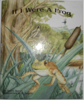
- If I were a frog =
NAME - Sherry Been =
CREATOR - Reader’s Digest Childrens Publishers Inc. =
CREATOR - Autobiography =
SUBJECT - Frogs =
SUBJECT - Book =
FORMAT
Data Modeling
| Attribute | Field Name | Searchable Y or N? |
Physical or Subject |
|---|---|---|---|
| Name |
|
|
Physical |
| Creator |
|
|
Physical |
| Physical Description |
|
|
Physical |
| Subject |
|
|
Subject |
Implementation of Data Model
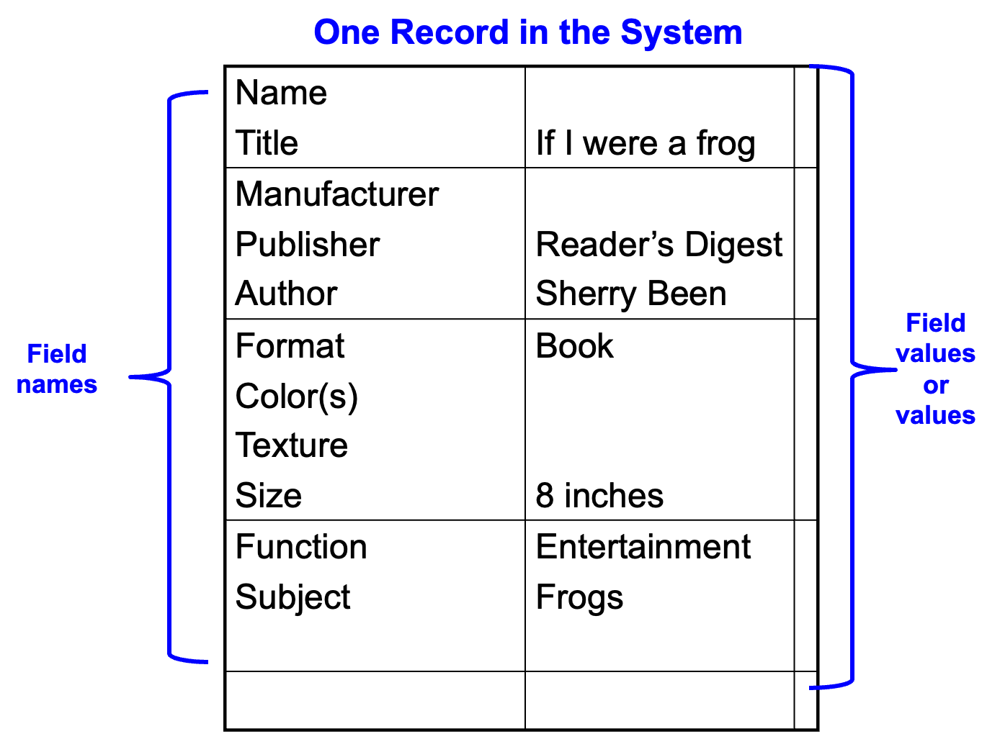Bob’s Record in the System
Record ID: 0001
Name: Bob
Manufacturer: ZooLogics Inc.
Format: toy
Size: 6 inches long, 4 inches high
Color: green, gold, red
Features: movable head
Subject: red-eyed tree frog
Function: entertainment
Image: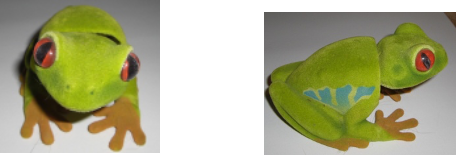